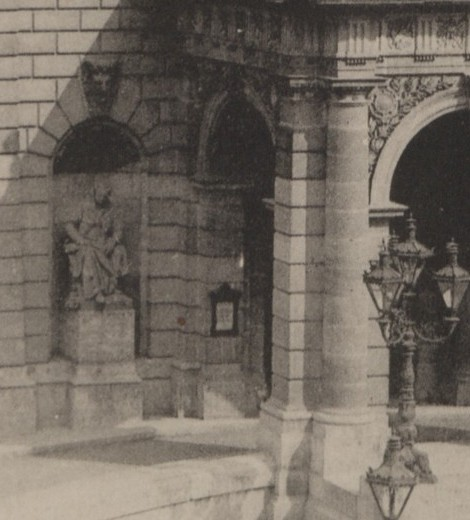

| type | statue |
|---|---|
| name | Erkel Ferenc (seated) |
| wall | W0_24 |
| position | [30.285, -52.265, 1.2] |
| size | [1.6, 1.2, 2.6] |
| confidence | B |
| notes | Strobl Alajos, limestone, c.1882–84; left of the entrance per S19 (C) |
| sculptor | Strobl Alajos |
| material | limestone |
| sources | S14: Szobrok az Operaház homlokzatán (opera.hu) S15: Magyar Állami Operaház — hu.wikipedia S19: A View on Cities: State Opera House |

# Erkel Ferenc — seated statue (ST_ERKEL) - Subject: Erkel Ferenc (1810–1893), composer, first music director of the Opera; seated, calm pose (S14). - Sculptor: Strobl Alajos; limestone; c.1882–84 (S14). - Position: niche left of the main entrance (S19 → C). - Later: a Wikimedia Commons file caption says it was renovated by Kallós Ede in 1954 (seen in search results only; Commons is unreachable from the build environment → unverified). - Images: only a small 1883 general view (crop below). A close-up comparable to Liszt's plate 99 was not found in the BFL Ybl archive set. Next: Fortepan and FSZEK Budapest Gyűjtemény by keyword "Erkel szobor Operaház".